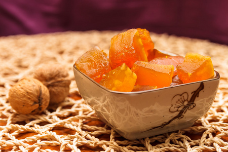

|  |
| Calabaza en Tacha（蜜饯南瓜） 蜜饯南瓜是另一个经典传统，经常被放在亡灵节的祭坛上作为死者的供品，并作为早餐、甜点或生者的点心。在 piloncillo 釉料中简单烹制的新鲜南瓜片本身就是墨西哥人的最爱，但葡萄干、红薯、番石榴，甚至南瓜本身的烤种子都使这道不起眼的美食成为一道非常特别的菜。在一些地方，这种蔬菜是用糖渍的，上面有一些孔用来添加香料，让热量在里面发挥它的魔力。然后在食用前将南瓜切成小块——种子、内部纤维等等。你需要一个南瓜、红糖或 piloncillo、橙子、肉桂和水。1 小时 15 分钟后准备就绪。 |